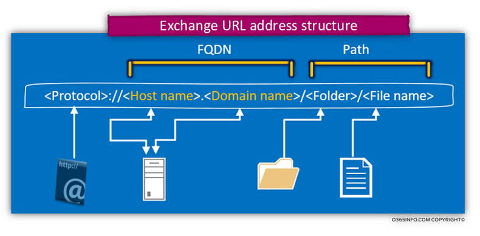

More On URL
Web browsers utilizes the URL to open or retrieve files on internet. The format of a URL consists of different parts.

The first part of the address (URL) indicates the protocol or service being used. It tells the browser what type of server it is to connect and by which
protocol.
The second part of the URL is a Full Qualified Domain Name (FQDN) which identifies the web address running on the server.
The third part is the path name that refers to the location of files. The path name is always preceded by single slash '/' after the domain name and the
fourth part is the file extension.
URLs can be basically categorized into: Absolute URL and Relative URL.
- Absolute URL: Absolute URLs are the URLs with complete internet address specifying the location of a resource. An Absolute URL includes protocol, host, path and name of the resource. For example: www.it_pcoples.com/index.htm.
- Relative URL: A relative URL is not fully complete but it inherits the protocol, host and path information from its parent document (the document file
that links to it). Relative URLs are used to refer links on the same server as the page that contains them.
Most of the web pages are identified by relative URL where hyperlinks points to (last destination) documents and other files which are located on the
same site. Ex: link.htm.
Click here to go to HOME PAGE.